01Decisiones tomadas
| Tema | Decisión | Consecuencia para el diseño |
|---|---|---|
| Tipologías | Edificio en altura, torre mirador/escultórica y torre reticulada/antena | Un único modelo de datos con tres plantillas. Las tres comparten el motor de barras 3D. Los edificios agregan láminas (tabiques, núcleo y losas como diafragma) y las reticuladas agregan el módulo CIRSOC 306. |
| Plataforma | Web en navegador | TypeScript, Three.js y un solver en un Web Worker. Sin instalación y con funcionamiento offline (PWA). Conexión directa a Google Sheets API. |
| Análisis | FEM asistido, verificado analíticamente con doble integración (Euler-Bernoulli) y viga de Timoshenko | Cada resultado FEM global se contrasta con un modelo de viga en voladizo equivalente que se calcula fila por fila (piso por piso) en el Sheets. La app muestra el error % entre ambos. |
| Usuario | Estudiantes | Cada número tiene tres capas: qué es, cómo se calcula (con los valores reemplazados) y dónde lo pide el CIRSOC (solo la referencia al artículo, sin el texto). |
| Normativa | Solo manuales CIRSOC | Se descarta la planilla de cátedra. Los coeficientes y las tablas los carga el usuario desde su propia copia del CIRSOC en el Sheets (ver licencias). |
02Mapa normativo CIRSOC → módulos
Cada reglamento se convierte en un módulo con entradas, salidas y referencias de artículo. Las ediciones están sujetas a confirmación. La Resolución 11/2026 pidió la vigencia legal de los CIRSOC 101-2025, 102-2025, 200-2024 y 201-2025. Sobre las ediciones vigentes del 103, 301 y 306 no encontré una confirmación oficial actualizada (ver P1).
| Reglamento | Módulo de la app | Qué calcula | Fase |
|---|---|---|---|
| CIRSOC 101-2025 | cargas/gravitatorias | Cargas permanentes D y sobrecargas L por uso y piso, reducción de sobrecarga | F4 |
| CIRSOC 102-2025 | cargas/viento | Velocidad básica por zona, exposición, Kz, Kzt, Kd, factor de ráfaga G (rígida o flexible, f1 < 1 Hz), presiones por cara del perfil variable | F4 |
| INPRES-CIRSOC 103 (Parte I general; II hormigón; IV acero) | cargas/sismo | Zona, suelo, espectro de diseño, R/factor de ductilidad, método estático y modal espectral, distorsiones de piso, P-Δ, torsión accidental | F4–F5 |
| CIRSOC 200-2024 (a confirmar alcance) | bases | Se integrará cuando definamos qué aporta (¿bases de cálculo, combinaciones?) | F4 |
| CIRSOC 201-2025 | diseño/hormigon | Combinaciones, φ, flexo-compresión biaxial de pilares de forma libre, corte, tabiques (incluidos los curvos), esbeltez | F7 |
| CIRSOC 301 / 302 / 303 | diseño/acero | Tracción, compresión con pandeo, flexión, interacción para el exoesqueleto, el diagrid y las reticuladas; tubos (302) | F7 |
| CIRSOC 306 | tipologia/reticulada | Viento sobre reticulados (solidez, coeficientes de arrastre por tramo), verificación de montantes, diagonales y riendas | F8 |
| CIRSOC 104 / 108 | cargas/otras | Nieve y hielo (relevante para antenas y miradores en zonas frías) | F8 |
03Investigación en GitHub
Busqué por temas (análisis estructural, FEM, Timoshenko, edificios altos, diagrid, outrigger, torres reticuladas, CIRSOC, geometría paramétrica, sincronización con Sheets) y leí los README de los proyectos más relevantes. La columna Uso indica qué permite la licencia:
Motores FEM y análisis estructural
| Proyecto | Licencia · lenguaje | Qué aprendemos | Uso |
|---|---|---|---|
| madil4/awatif ★192 | MIT · TS | Pórticos 3D en el navegador. Tiene dos solvers con el mismo resultado: uno C++/WASM rápido y otro en TypeScript legible "de referencia". Es la idea central de nuestra didáctica: el solver legible es el que se enseña. | dependencia idea |
| jpreyes/portico-core | AGPL-3.0 · JS | Barras Timoshenko 3D de 12 GDL, láminas, diafragma rígido, zonas rígidas, modal, espectral (CQC/SRSS), P-Δ, pandeo y pushover. Incluye un manual de verificación con 18 casos y control de equilibrio ΣR = ΣP en cada modelo. Su núcleo es agnóstico de norma y cada país es un preset opcional (el modelo para nuestro "preset CIRSOC"). | idea |
| tiveor/struxure | Apache-2.0 · TS | Solver en un Web Worker cancelable, diagramas de esfuerzos en "cinta" 3D, mapa de calor D/C, secciones extruidas, importación DXF/IFC y una plantilla de torre reticulada. Su validation.md dice con honestidad qué está verificado y qué no. | dependencia idea |
| banyaattila-crypto/FEMAti | MIT · TS | Viga Timoshenko elastoplástica con integración reducida selectiva (contra el bloqueo por corte). Cada fórmula está trazada a página y ecuación de la fuente. Tiene menú "Theory" y modo histórico animado del solver. Es nuestro modelo para "cada fórmula → artículo CIRSOC". | dependencia idea |
| JWock82/Pynite ★786 | MIT · Python | Pórticos 3D, placas DKMQ, objeto "ShearWall" con fuerzas de pilar y viga de acople, elementos solo tracción, modal y diagramas por barra. Sirve como verificador independiente (corre en Python o Pyodide). | validación idea |
| mhaseebmohal/structural-frame-analysis | MIT · JS | Rigidez directa 2D/3D, P-Δ, modos y espectro en el navegador. Las pruebas automáticas comparan lineal, P-Δ y modal con soluciones cerradas. | idea |
| OpenAEC/open-fem-studio-mechanics | AGPL-3.0 · TS | Láminas para losas y tabiques, paneles de carga que reparten a vigas, diagonales solo tracción, barras de sección variable y asistentes ("wizards") que generan estructuras completas. | idea |
| OpenSees / xara | BSD-like · C++/Py | Referencia académica para no linealidad y dinámica. opstool (GPL) muestra buena visualización. | validación |
| anaStruct ★474 | LGPL-3.0 · Python | API 2D muy simple y didáctica. Buenos ejemplos de diagramas. | idea |
| xcfem/xc ★395 | GPL-3.0 · C++/Py | FEM para obras civiles con verificaciones normativas y uniones. | idea |
| FEAScript | MIT · JS | FEM genérico en JS. Útil para mallas 2D de secciones y torsión. | dependencia |
Secciones de forma libre y diseño de hormigón
| Proyecto | Licencia | Qué aprendemos | Uso |
|---|---|---|---|
| section-properties ★571 | MIT · Python | Propiedades de cualquier sección por FEM: A, I, J de torsión, alabeo, centro de corte y áreas de corte (κ para Timoshenko). Es el referente para los pilares de forma libre. | validación idea |
| concrete-properties | MIT · Python | Diagramas de interacción P-M y biaxiales, momento-curvatura y sección fisurada para secciones de hormigón arbitrarias. | validación idea |
| fib/structuralcodes | Apache-2.0 · Python | Arquitectura de "código de diseño" desacoplada: materiales, leyes constitutivas y verificaciones por norma como módulos intercambiables. Es un patrón para diseño/cirsoc201. | idea |
| pycba | AGPL-3.0 | Vigas continuas y líneas de influencia, con enfoque didáctico. | idea |
Torres, sistemas de altura y normativa argentina
| Proyecto | Licencia | Qué aprendemos | Uso |
|---|---|---|---|
| efdiloreto/ZondaPro | GPL-3.0 · Python/Qt | Viento CIRSOC 102-2025 con mapa 3D de presiones por zona, SPRFV y C&R, y reporte PDF. Es el referente argentino más cercano. Solo tomamos ideas de UX; los valores los contrastamos como validación. | idea validación |
| tall_building outrigger | MIT · Python | Modelo MDOF de predimensionado con núcleo y outrigger: la rigidez del outrigger entra como matriz acoplada. Calcula períodos, espectro, derivas y ahusamiento racional de elementos con la altura. | idea validación |
| munah-a/diagrid-viewer | MIT · TS | Diagrid 3D en Three.js, "ring connect" por niveles, secciones tubulares CHS y benchmarks FEM automáticos. | idea |
| retug/parametric-etabs-tower, ParametricTower, Hyperbuilder | varias | Geometría paramétrica de torres en Three.js (plantas, giro, grilla de columnas) y puente a software comercial. | idea |
| Repos CIRSOC menores (cirsoc301, agustdiez/cirsoc301, py-concrete-calc) | varias / sin licencia | Muestran demanda local de verificadores 301/201. No hay ningún proyecto abierto que integre torre + FEM + CIRSOC: ese es nuestro hueco. | idea |
Geometría, 3D, fórmulas y hojas de cálculo
| Proyecto | Licencia | Para qué | Uso |
|---|---|---|---|
| three.js | MIT | Visor 3D: ExtrudeGeometry, Shape con arcos, LatheGeometry (revolución), TubeGeometry (barrido) | dependencia |
| JSXGraph | LGPL-3.0 / MIT | Construcciones geométricas interactivas: compás, arcos por 3 puntos, intersecciones y restricciones. Base del bocetador 2D de plantas y pilares. | dependencia |
| manifold / three-bvh-csg | Apache / MIT | Booleanas robustas (vanos en tabiques curvos, núcleos con aberturas) | dependencia |
| That Open Engine / IfcOpenShell | MIT / LGPL | Exportar e importar IFC (BIM) desde el navegador | dependencia |
| HyperFormula | GPL-3.0 o comercial | Motor de fórmulas compatible con Excel/Sheets sin interfaz. Evalúa en la app la misma fórmula que vive en el Sheets. La licencia exige GPL o licencia paga; la alternativa es un evaluador propio de un subconjunto de funciones. | idea (ver P6) |
| math.js · KaTeX | Apache · MIT | Unidades, álgebra y matrices; renderizado de fórmulas paso a paso | dependencia |
| COMPAS | MIT · Python | Estructuras de datos de mallas y geometría para arquitectura, y form-finding | idea |
| google-docs-markdown-sync | MIT | Patrón de sincronización bidireccional Sheets ↔ archivos | idea |
04Galería de referentes
Capturas tomadas de los repositorios públicos, redistribuidas según su licencia y con atribución. Son imágenes de otros proyectos, no de nuestra app.
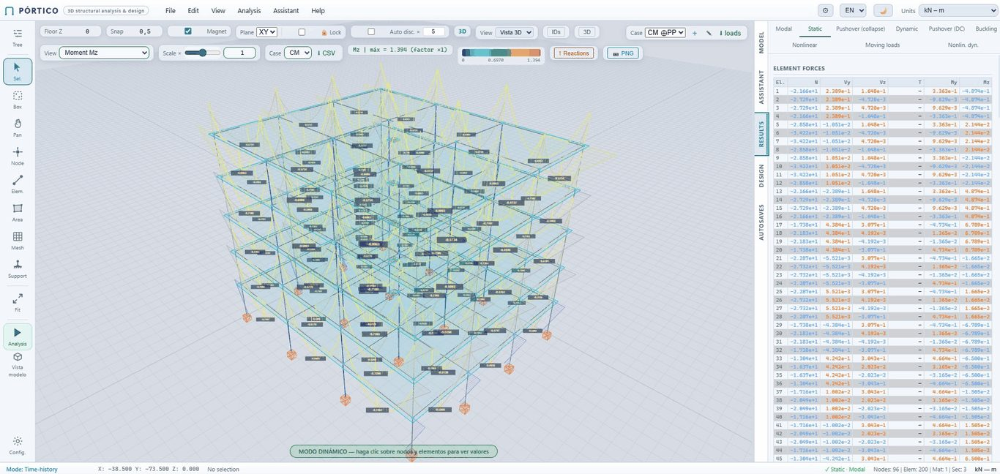
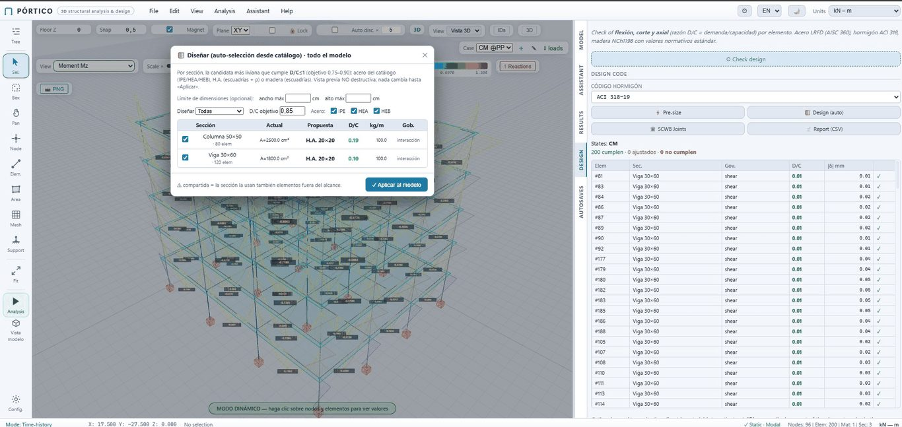
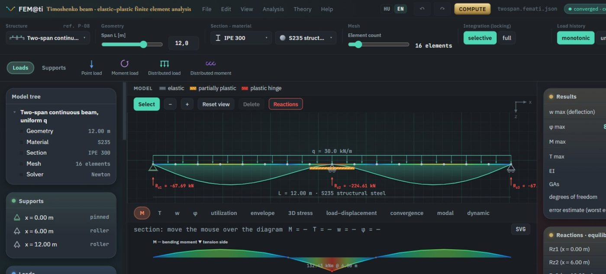
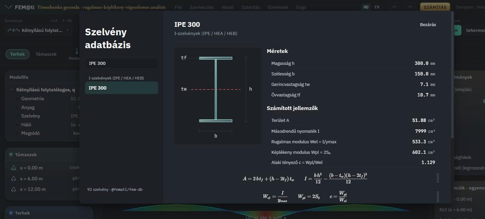
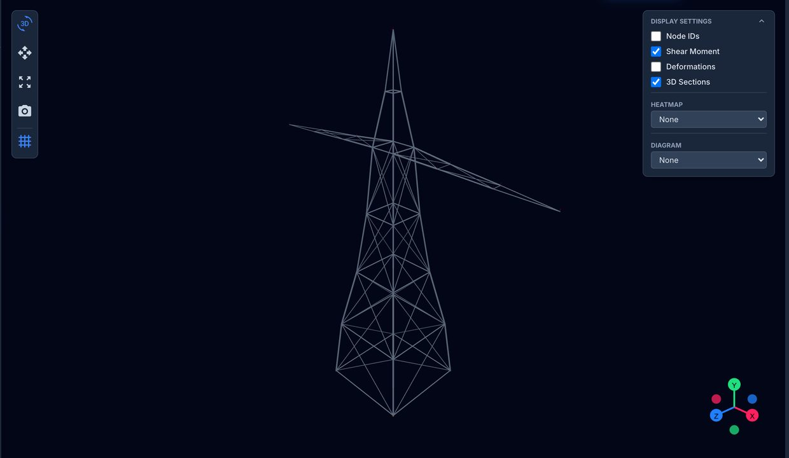
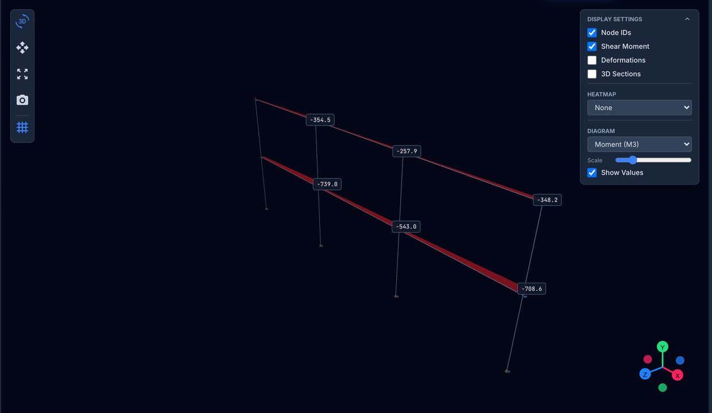
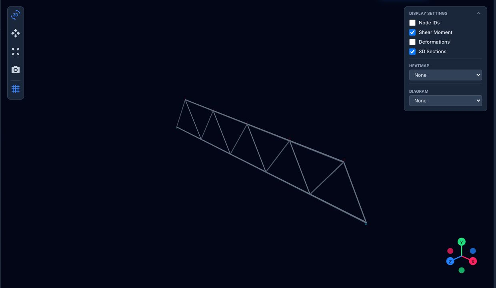
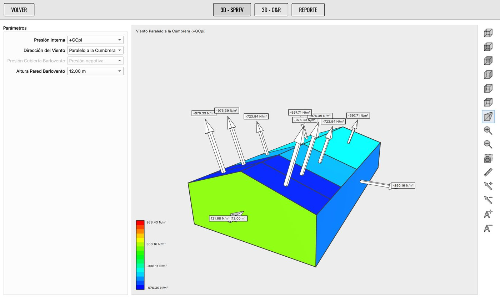
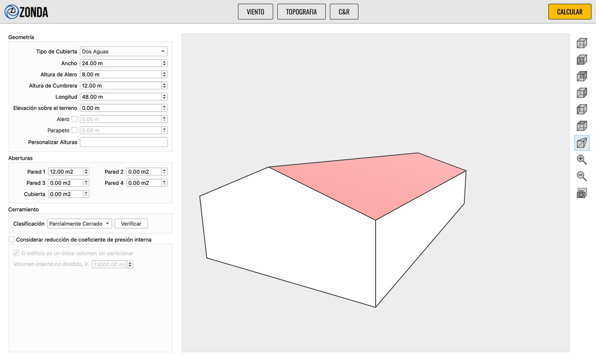
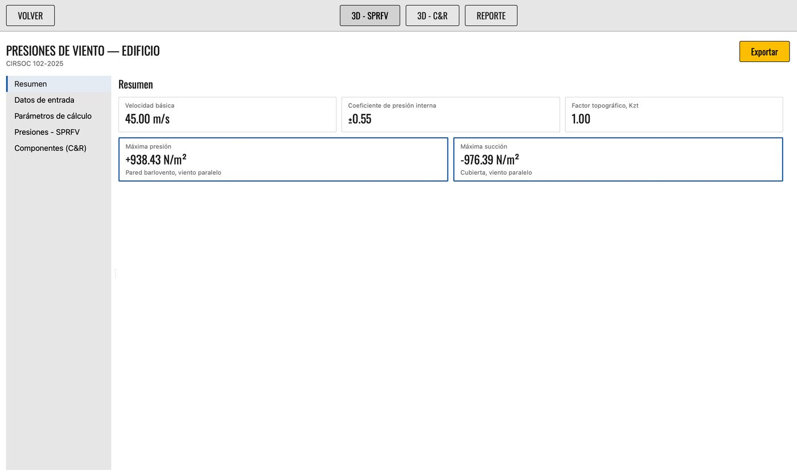
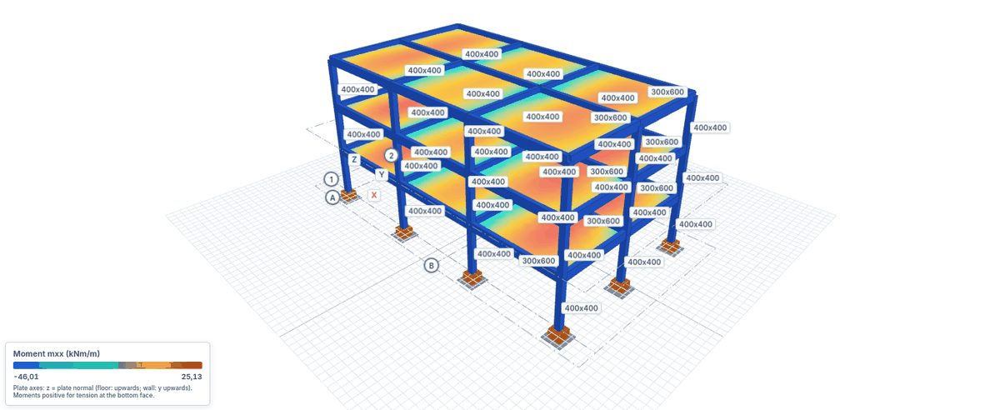
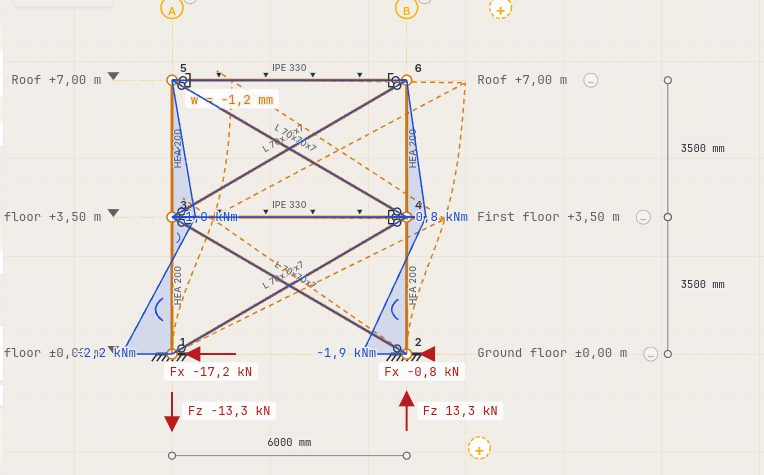
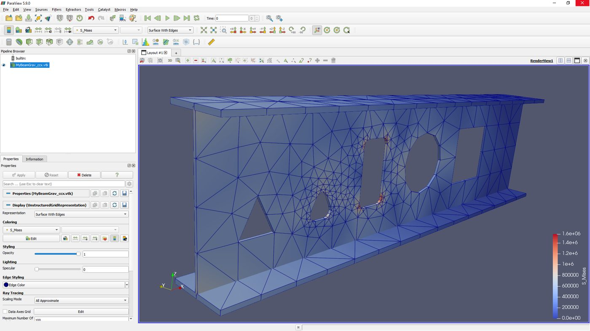
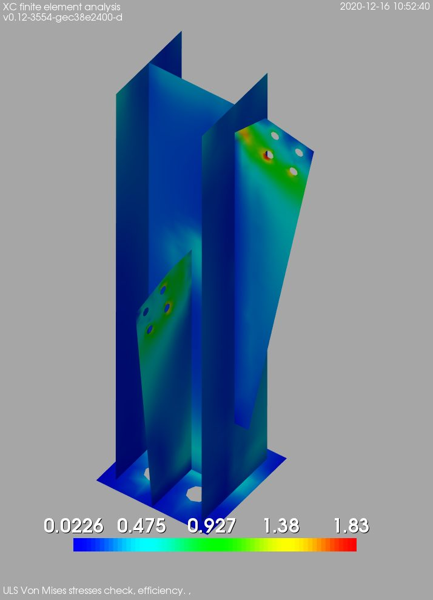
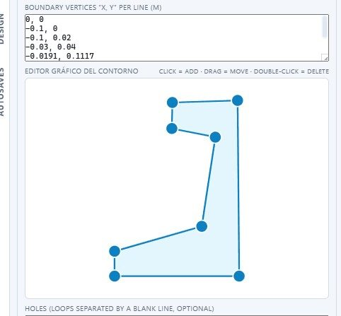
05Software comercial y privado: solo ideas
El código privado no es público, así que no se puede (ni se debe) leer ni copiar. Lo que sí podemos usar es lo que esos productos describen públicamente como funcionalidades: las ideas y los métodos no están protegidos por derecho de autor. No incluyo capturas de estos productos porque sus imágenes sí están protegidas. Cada nombre lleva a la página pública del fabricante.
ETABS (CSI)
Modelado por pisos, diafragmas automáticos, etiquetas "pier/spandrel" para tabiques y cargas laterales automáticas por norma. → Nuestro "árbol de niveles" y el objeto Tabique con esfuerzos integrados.
Midas Gen
Análisis por etapas constructivas y acortamiento diferencial de columnas en torres altas. → Fase avanzada F9, muy didáctico.
Karamba3D (Grasshopper)
FEM paramétrico en tiempo real: se cambia la forma y el resultado se actualiza al instante. → Nuestro modo "boceto vivo" con análisis rápido.
RFEM / RSTAB + RWIND (Dlubal)
Túnel de viento digital (CFD) que genera cargas sobre formas complejas. → Para torres escultóricas: aviso didáctico de cuándo el CIRSOC 102 exige túnel de viento o un estudio especial.
CYPECAD
Ya implementa INPRES-CIRSOC 103 (anunciado públicamente). → Referencia profesional local para validar órdenes de magnitud de cortes basales.
Tekla / Revit / Robot
Separación entre modelo físico y modelo analítico con ejes, offsets y uniones rígidas. → Nuestro generador "geometría → modelo analítico" visible para el alumno.
SOFiSTiK / SAP2000
Láminas de alto orden, pandeo global, P-Δ y modal con masa participante. → Checklist de funcionalidades del motor.
Grasshopper
Programación visual por nodos. → Vista opcional "grafo de cálculo": ver cómo cada parámetro fluye hasta la verificación.
06Demo 3D de la propuesta
Esta es una maqueta interactiva de nuestra aplicación, no un cálculo. Muestra el tipo de control paramétrico que proponemos: perfil de torre variable (ahusamiento, panza, giro), planta libre, núcleo con tabique en arco y tres sistemas estructurales. Arrastrá para orbitar.
Three.js r128 · la app real usaría la misma geometría para generar nodos y barras del modelo analítico.
07Motor geométrico: forma libre de verdad
7.1 Bocetador 2D de plantas y secciones
Un mismo bocetador sirve para dibujar plantas de piso, pilares de forma libre y tabiques curvos. Herramientas previstas:
- Polilínea con segmentos rectos y bulge (segmento de arco, como en DXF).
- Compás: arco por centro + radio + ángulos, o arco por 3 puntos.
- Spline (B-spline o Catmull-Rom) que se convierte en polilínea fina para el cálculo. Si con "spin line" te referías a otra herramienta, ver P3.
- Revolución y barrido (lathe/sweep) para pilares cuya sección cambia con la altura o para torres de revolución.
- Restricciones: tangencia, simetría, cotas paramétricas (que viven como celdas del Sheets).
7.2 Torre de perfil variable
La torre no es un prisma: es una pila de plantas generadas por funciones de la altura. Cada función es una columna del Sheets, así el alumno ve cómo cambia la planta en cada nivel:
También se podrá dibujar el perfil de elevación directamente con el bocetador (silueta), y la app deriva s(z) de ese dibujo.
7.3 Tabique con forma de arco circular
08Sistemas estructurales contemplados
Cada sistema es un generador: toma la geometría de la torre y produce barras y láminas. Además tiene un modelo analítico simplificado para la verificación y una ficha didáctica (cómo trabaja, camino de cargas, alturas típicas).
| Sistema | Modelo analítico de verificación | Clave didáctica |
|---|---|---|
| Pórtico / tubo aporticado | Viga de corte: GAeq = Σ 12EIc/h² · factor de rigidez de vigas; shear lag en el tubo | Por qué el tubo deja de ser eficiente al crecer (shear lag) |
| Tabiques / núcleo (incluidos curvos) | Viga de flexión EI con área de corte κGA (Timoshenko); reparto por rigidez y torsión por excentricidad | Centro de rigidez vs. centro de masa |
| Dual / tabique-pórtico | Viga acoplada flexión-corte (parámetro αH de interacción) | Cambio de curvatura de la deformada |
| Núcleo + outrigger + cinturón | Voladizo con resortes rotacionales en los niveles de outrigger (compatibilidad de giro); altura óptima | Cómo un outrigger "endereza" el núcleo |
| Diagrid / exoesqueleto | Rigidez equivalente por módulo: diagonales trabajando axialmente, EI y GA del módulo según el ángulo θ | Ángulo óptimo de diagonales (corte vs. flexión) |
| Megaestructura | Pórtico gigante con megacolumnas y megavigas cada N pisos | Estructura secundaria colgada o apoyada |
| Reticulada (CIRSOC 306) | Reticulado espacial; voladizo equivalente con EI = Σ Ai·di² de montantes | Relación de solidez y área expuesta al viento |
09Motor de cálculo y verificación
9.1 Dos caminos que se controlan entre sí
flowchart LR G[Geometría paramétrica] --> AM[Modelo analítico
nodos · barras · láminas] AM --> C[Cargas CIRSOC 101/102/103
y combinaciones] C --> FEM[FEM 3D
Timoshenko 12 GDL + láminas
diafragma rígido] C --> EQ[Voladizo equivalente
piso por piso en Sheets] FEM --> R1[Desplazamientos, esfuerzos,
períodos, derivas] EQ --> R2[Doble integración EB
+ término de corte Timoshenko] R1 --> CMP{Comparador
error %} R2 --> CMP CMP --> V[Verificaciones CIRSOC
201 / 301 / 306] V --> REP[Memoria de cálculo didáctica]
9.2 Verificación analítica (lo que vive en el Sheets)
La torre se reduce a un voladizo empotrado con propiedades variables EI(z) y κGA(z), una fila por piso. La doble integración se hace numéricamente (regla del trapecio o Simpson) para que funcione con un perfil variable y cada paso sea una columna visible:
9.3 Capacidades del FEM por fase
F3 · Lineal estático
Barras 3D Euler-Bernoulli y Timoshenko, liberaciones, offsets rígidos, diafragma rígido por piso, apoyos elásticos. Solver de matriz dispersa en un Web Worker.
F5 · Dinámica y 2º orden
Masas por piso, modal (Lanczos o subespacio), espectral CIRSOC 103 (SRSS/CQC), P-Δ, distorsiones de piso, torsión accidental.
F6 · Láminas
Cuadriláteros tipo MITC4/DKMQ para tabiques planos y curvos, núcleo con vanos y losas. Integración de esfuerzos por tabique ("pier").
F9 · Avanzado (opcional)
Pandeo global, etapas constructivas y acortamiento de columnas, no linealidad de riendas (reticuladas atirantadas).
10Sincronización bidireccional con Google Sheets
10.1 Principio: una sola verdad, dos vistas
El modelo de datos es único y cada dato tiene un ID estable. Tres reglas lo ordenan:
- Celdas de entrada (azul): se editan en la app o en el Sheets y el cambio aparece del otro lado.
- Celdas calculadas (blanco): son fórmulas reales del Sheets. La app evalúa la misma fórmula con un motor compatible, así el alumno puede abrir la celda y ver exactamente qué cuenta hace la app.
- Resultados FEM (verde): los escribe la app (el FEM no se puede hacer en celdas). En el Sheets son de solo lectura y llevan sello de versión.
| A · Nivel | B · z [m] | C · h [m] | D · s(z) | E · EI [kN·m²] | F · κGA [kN] | G · V [kN] | H · M [kN·m] | I · θ [rad] | J · v_f [mm] | K · v_s [mm] | L · v_FEM [mm] | M · error | |
|---|---|---|---|---|---|---|---|---|---|---|---|---|---|
| 5 | P40 | 120.0 | 3.00 | =1+($B$1-1)*B5/$B$2 | =EI0*D5^4 | =GA0*D5^2 | =G6+q*C5 | =H6+G6*C5 | =I6+(H5/E5+H6/E6)/2*C5 | =J6+(I5+I6)/2*C5*1000 | =K6+G5/F5*C5*1000 | 201.4 | =L5/(J5+K5)-1 |
| 6 | P39 | 117.0 | 3.00 | 0.712 | … | … | … | … | … | … | … | 195.8 | 0.1 % |
| … | … | … | … | … | … | … | … | … | … | … | … | … | … |
Pestaña 11 · Verificación analítica (maqueta). Las fórmulas muestran la doble integración por trapecios piso a piso. Las filas se ordenan del tope a la base para que V y M se acumulen hacia abajo.
10.2 Pestañas previstas del libro
| Pestaña | Contenido | Quién escribe |
|---|---|---|
| 00_LEEME | Leyenda de colores, versión del modelo, cómo editar | app |
| 01_Proyecto | Ubicación, destino, zona sísmica y de viento, unidades | ambos |
| 02_Materiales | Hormigones, aceros (f'c, E, G, ν, γ) | ambos |
| 03_Secciones | Secciones paramétricas y libres: vértices, arcos (bulge), propiedades | ambos / fórmulas |
| 04_Niveles | Pisos: z, altura, planta llave, masa | ambos |
| 05_Perfil | Funciones s(z), θ(z), traslación, morph, retranqueos | ambos / fórmulas |
| 06_Sistema | Sistema estructural y parámetros del generador (módulo diagrid, niveles de outrigger…) | ambos |
| 07_Elementos | Nodos y barras generados (con override manual) | app (+ overrides) |
| 08_Tablas_CIRSOC | Coeficientes que carga el usuario de su ejemplar (zonas, Kz, espectros…) | usuario |
| 09_Viento_102 · 10_Sismo_103 | Cálculo de cargas paso a paso | fórmulas |
| 11_Verif_Analitica | Doble integración + Timoshenko por piso | fórmulas + FEM |
| 12_Resultados_FEM | Desplazamientos, esfuerzos, modos, derivas | app |
| 13_Diseño_201_301_306 | Verificaciones de elementos, D/C | fórmulas + app |
| _meta · _cambios | Contador de revisión, registro de quién cambió qué y cuándo | app + Apps Script |
10.3 Mecanismo técnico
sequenceDiagram
participant U as Alumno (app web)
participant A as App (modelo en memoria + IndexedDB)
participant S as Google Sheets API v4
participant G as Apps Script (onEdit en el Sheets)
U->>A: cambia altura de piso P12
A->>A: recalcula fórmulas localmente (misma sintaxis)
A->>S: values.batchUpdate (celda entrada) + _meta.rev++
Note over S,G: los cambios por API NO disparan onEdit, así se evita el eco
U->>S: edita f'c en el Sheets a mano
S->>G: onEdit(e)
G->>S: _meta.rev++ y registra el rango en _cambios
loop cada 2–3 s (o al volver a la pestaña)
A->>S: lee _meta.rev
S-->>A: rev nueva
A->>S: batchGet de los rangos cambiados
A->>A: actualiza modelo y 3D, marca "FEM desactualizado"
end
- Autenticación: Google Identity Services (OAuth en el navegador). Sin servidor propio en la fase 1. El alumno conecta su propio Sheets.
- Sin bucles de eco: el
onEditsimple no se dispara con escrituras hechas por la API, y losonEditsimples sí pueden escribir en la misma hoja, así que no hace falta autorizar un trigger instalable. - Conflictos: última escritura gana por celda, con marca de tiempo. Si la app y el Sheets cambiaron la misma celda entre dos sondeos, la app lo resalta y pregunta.
- Offline: cola de cambios en IndexedDB que se envía al reconectar.
- Compatibilidad Excel: limitar las fórmulas a un subconjunto común Sheets/Excel (sin QUERY, IMPORTRANGE ni ARRAYFORMULA) y exportar a .xlsx con las fórmulas.
- Tiempo real "de verdad" (fase posterior): backend liviano (Cloud Run o Firebase) que recibe webhooks del Apps Script y empuja por WebSocket.
11Didáctica e interfaz
Tres capas por resultado
Qué es · cómo se calcula (fórmula con valores reemplazados) · dónde lo pide el CIRSOC (artículo).
Camino de cargas animado
Flechas que bajan desde la fachada a la losa, del diafragma a los tabiques y núcleo, y de ahí a la fundación.
Semáforo D/C
Color por relación demanda/capacidad, con explicación de qué ajustar para mejorarla.
Comparar sistemas
La misma torre con tres sistemas lado a lado: flecha, período y consumo de material.
Modo "a mano"
El alumno completa una celda antes de que la app la revele; la app corrige.
Memoria de cálculo
Documento que se exporta con índice, hipótesis, fórmulas, resultados y referencias CIRSOC.
12Arquitectura de software
flowchart TB
subgraph UI[Interfaz · TypeScript]
SK[Bocetador 2D
JSXGraph]
V3[Visor 3D
Three.js]
DP[Panel didáctico
KaTeX]
WZ[Flujo por pasos]
end
subgraph CORE[Núcleo · TypeScript puro, testeable]
M[(TowerModel JSON
IDs estables · versionado)]
GEO[geometry/
perfiles, plantas, Green, CSG]
GEN[systems/
generadores: núcleo, diagrid, outrigger…]
LD[loads/
101 · 102 · 103]
FE[fem/
ensamblado, solver disperso, modal]
AN[analytic/
doble integración, Timoshenko]
DS[design/
201 · 301 · 306]
FX[formula/
evaluador compatible Sheets]
end
subgraph IO[Integraciones]
GS[Google Sheets API v4 + Apps Script]
XL[Exportar .xlsx / IFC / DXF / PDF]
IDB[(IndexedDB offline)]
end
UI --> M
M --> GEO --> GEN --> FE
M --> LD --> FE
M --> AN
FE --> DS
AN --> DS
FX --- M
M <--> GS
M --> XL
M <--> IDB
FE -. Web Worker / WASM .- FE
- Monorepo con Vite, TypeScript estricto y Vitest. El núcleo no depende de la interfaz, así se puede probar contra los casos de validación en CI.
- Solver: primero TypeScript legible (es el que se enseña). Si hace falta velocidad, una versión WASM con los mismos tests, como hace Awatif.
- Unidades: SI internamente (kN, m). Conversión solo en la vista. Cada celda del Sheets lleva su unidad en el encabezado.
- Licencia del proyecto: a decidir (ver P7). Si queremos reusar código AGPL (PORTICO, Open FEM Studio), nuestro proyecto tendría que ser AGPL.
13Plan de desarrollo
Las fases son incrementales y cada una termina en algo usable y validado. Las duraciones son relativas (semanas de una persona con asistencia de IA) y se ajustan cuando definamos la dedicación.
gantt dateFormat YYYY-MM-DD axisFormat %b section Base F0 Propuesta (este documento) :done, f0, 2026-11-13, 7d F1 Esqueleto, modelo y sync Sheets MVP :f1, after f0, 21d section Geometría F2 Bocetador 2D + torre paramétrica 3D :f2, after f1, 28d section Cálculo F3 FEM barras 3D + verif. analítica :f3, after f2, 28d F4 Cargas 101/102/103 + combinaciones :f4, after f3, 28d F5 Modal, espectral, P-Δ, derivas :f5, after f4, 21d F6 Láminas: tabiques, núcleo, arcos :f6, after f5, 35d section Diseño y cierre F7 Diseño 201 / 301 :f7, after f6, 35d F8 Reticuladas 306 + miradores :f8, after f7, 21d F9 Memoria, IFC, avanzado :f9, after f8, 28d
| Fase | Entregable | Criterio de aceptación |
|---|---|---|
| F1 | Repo, TowerModel v1, conexión OAuth a Sheets, pestañas 00–05, sync bidireccional de celdas de entrada | Editar una celda en el Sheets se ve en la app en menos de 5 s y viceversa, sin eco ni pérdida, incluso offline |
| F2 | Bocetador (polilínea, compás, arco 3 pts, spline), propiedades de sección, perfil variable, tabique en arco, vista 3D | Propiedades de 10 secciones iguales a las de section-properties (±0.5 %). Mismas propiedades en la app y en el Sheets |
| F3 | Solver EB/Timoshenko 3D, diafragma rígido, pestaña 11 de verificación analítica | Voladizo, biempotrada y pórtico exactos. Torre de perfil variable: FEM vs. doble integración con error < 2 % |
| F4 | Módulos 101, 102 y 103 (estático), combinaciones | Ejemplos resueltos a mano por nosotros que coinciden. Contraste de viento con Zonda |
| F5 | Modal, espectral, P-Δ, distorsiones | Frecuencias de un voladizo exactas. Período FEM vs. Rayleigh/Stodola del Sheets |
| F6 | Láminas MITC4/DKMQ, núcleo con vanos, tabique curvo, generadores diagrid, outrigger y exoesqueleto | Patch tests, tabique en voladizo vs. Timoshenko, comparación con Pynite |
| F7 | Verificaciones 201 (incluidos pilares de forma libre P-M-M) y 301 | Ejemplos de aplicación propios. Diagramas de interacción vs. concrete-properties |
| F8 | Plantilla reticulada (306), plantilla mirador | Torre reticulada típica: esfuerzos en montantes vs. cálculo manual |
| F9 | Memoria exportable, IFC, etapas constructivas (opcional) | Memoria legible por un docente sin abrir la app |
14Copyright y licencias: reglas del proyecto
Ideas y métodos: libres
El método de rigidez, la doble integración y las fórmulas de Timoshenko no tienen dueño. Los implementamos nosotros desde los libros y el CIRSOC.
Código MIT / BSD / Apache
Se puede usar como dependencia o adaptar, conservando el aviso de copyright y licencia (archivo THIRD_PARTY_NOTICES).
Código GPL / AGPL / LGPL
No copiamos código salvo que el proyecto adopte la misma licencia. Solo leemos para entender las ideas. Las LGPL se pueden usar como librería sin modificar.
Sin licencia
Todos los derechos reservados: solo se mira, no se copia.
Software comercial
Solo funcionalidades descritas públicamente. Ni capturas, ni manuales, ni ingeniería inversa.
Texto del CIRSOC
Los reglamentos tienen derechos del INTI. La app guarda referencias (n.º de artículo o tabla) y fórmulas. Las tablas de coeficientes las carga cada usuario desde su ejemplar en la pestaña 08. No se redistribuye texto ni tablas completas.
Las imágenes de la galería se redistribuyen con atribución según las licencias de cada repositorio (MIT, Apache-2.0, GPL-3.0, AGPL-3.0), que permiten la redistribución con aviso.
15Preguntas abiertas para cerrar la propuesta
- Ediciones CIRSOC. ¿Qué ediciones tenés del 103 (Partes I, II y IV), 301 y 306? ¿Qué es exactamente el CIRSOC 200-2024 en tu ejemplar? Así fijamos el mapa normativo.
- "Lo que dicta el CIRSOC de torres en altura". No conozco un artículo del CIRSOC que exija verificar con doble integración o Timoshenko (el 103 exige distorsiones de piso, P-Δ, etc.; el 306 es para antenas). ¿Te referís a un artículo concreto? Si es así, pasame el número y lo usamos como columna vertebral de la pestaña 11.
- "Spin line". ¿Es spline (curva suave por puntos de control), revolución de un perfil (spin), o ambas? En la propuesta incluí las dos.
- Exoesqueleto. ¿Lo pensás como estructura exterior que soporta todo (diagrid o megapórtico perimetral), o como refuerzo exterior separado de la fachada (con vínculos a las losas)? Cambia el generador y el modelo de vínculos.
- Sheets: ¿uno por proyecto o uno por alumno? ¿Lo crea la app a partir de una plantilla o conectás uno existente? ¿Lo van a editar varias personas a la vez?
- Motor de fórmulas. ¿Aceptás que el proyecto sea GPL-3.0 (lo que habilita HyperFormula), o preferís una licencia permisiva y escribimos un evaluador propio de un subconjunto de funciones?
- Licencia y uso. ¿El proyecto será abierto (MIT o AGPL) o privado? ¿Uso personal, de cátedra o comercial a futuro?
- Fundaciones. ¿Entran en el alcance (CIRSOC 401, interacción suelo-estructura) o la torre arranca empotrada?
- Prioridad de tipología. ¿Con cuál arrancamos la F2–F3: edificio en altura, mirador o reticulada?
- Sesión anterior. ¿Querés que revise el trabajo de la otra sesión (sin la planilla de cátedra) para reutilizar conceptos o datos de prueba? Necesitaría que lo subas a este repositorio.